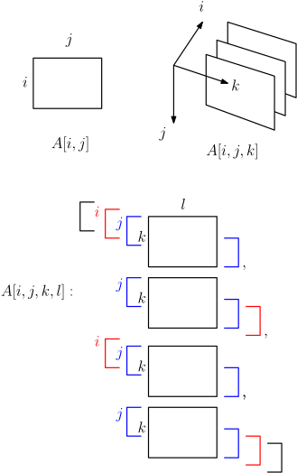
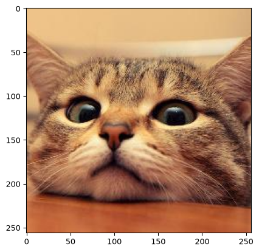
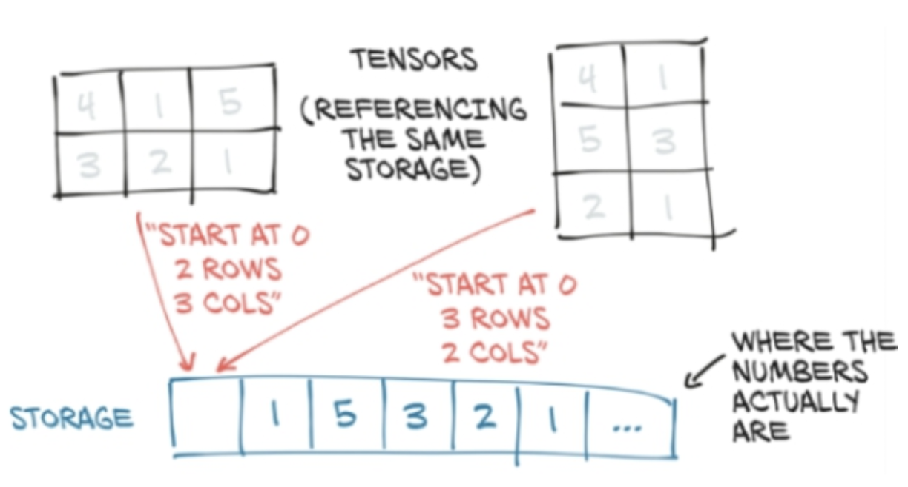
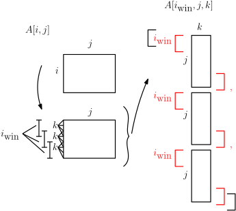
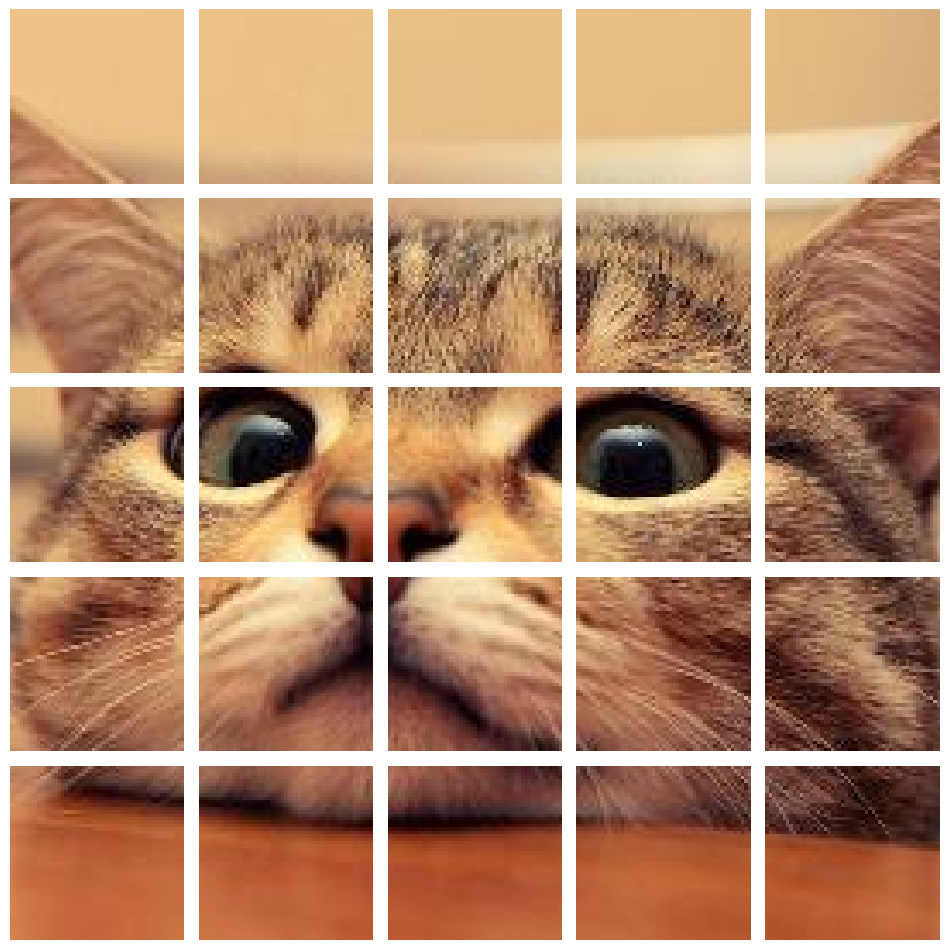
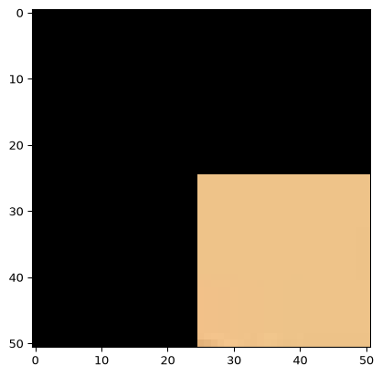
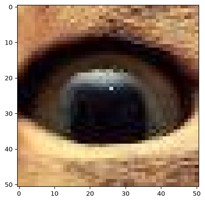
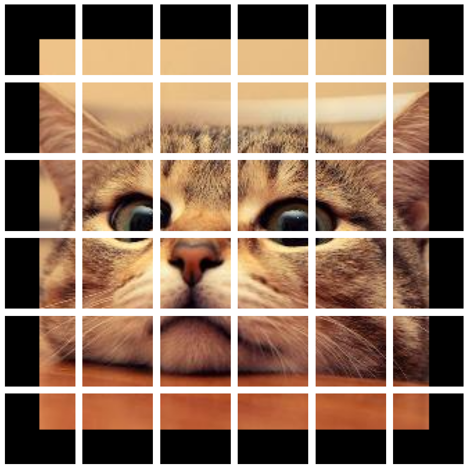
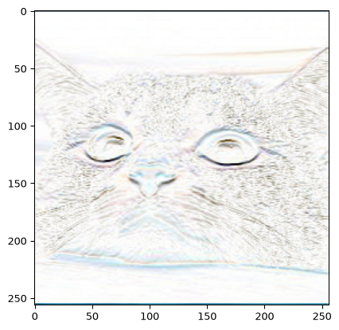
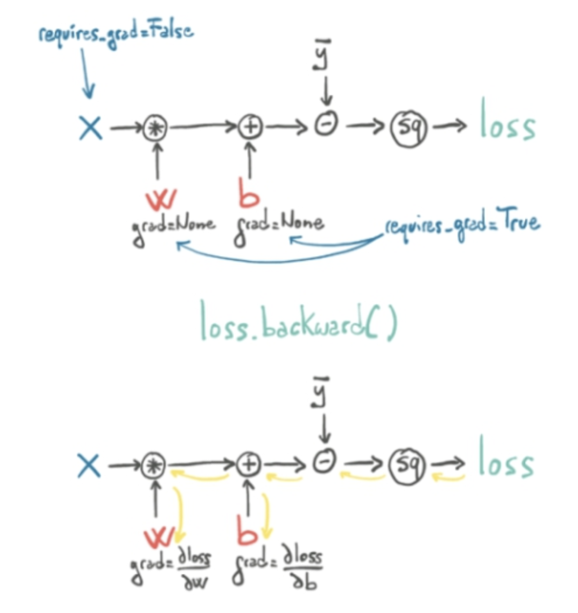

import numpy as np
A = np.array([[1,2,3],[4,5,6]])
print('Array and dimensions:')
print(A)
print(A.shape)Array and dimensions:
[[1 2 3]
[4 5 6]]
(2, 3)In engineering and machine learning it’s important to be able to store and manipulate data effectively and efficiently, as well as represent models effectively and efficiently. Here we will focus on Python-based tools, though other languages such as R, Julia, MATLAB and even C/C++ and Fortran could also be used.
One of the central concepts in both scientific computing and machine learning is the multi-dimensional array. The main library for working with such arrays in Python is NumPy, which you would have seen. However, as we will look at, many machine learning libraries are based on their own improved NumPy-like libraries, usually using the term tensor instead of array.
Note: While highly structured (e.g. feature rich) data is typically organised into tabular format using data table data structures like those provided by Pandas, datatable and Polars, data provided in less structured form (e.g. explicit features not given) such as text, image, video, audio, network etc. data are often stored in lower-level data structures, usually multi-dimensional arrays. These are the basic inputs into neural networks, which excel in particular with non-tabular data and automatically learning features. Similarly, when solving physical simulation models, e.g. involving differential equations describing information evolving in space and time, the variables are usually stored in multi-dimensional arrays rather than data tables.
Machine learners like to call multi-dimensional arrays tensors. Be warned that ‘tensor’, much like ‘vector’, is a term with many different definitions and meanings across mathematics, physics, computing, etc. Here we think of a number as a zeroth order array, a vector as a one-dimensional array, a matrix as a two-dimensional array/tensor, and a tensor in general as an \(n\)-dimensional array for any \(n\). Thus a number is a tensor, a vector is a tensor, a matrix is a tensor, a three-dimensional array is a tensor etc. For us, tensor \(\equiv n\)-dimensional array.
Just like a two-dimensional matrix might just represent plain data stored in a two dimensional array but could also represent a linear mapping of one-dimensional arrays (vectors) to one-dimensional arrays (vectors), a tensor can represent e.g. just \(n\)-dimensional data arrays but also a linear mapping of lower dimensional tensors to lower dimensional tensors. For example, linear image filters can be thought of as four-dimensional tensors that linearly map two-dimensional images to two-dimensional images. For now, though, just remember tensor \(\equiv n\)-dimensional array.
To carry out machine learning tasks, we will consider a library that duplicates much of what NumPy offers, while adding additional features important for machine learning: PyTorch. While this is designed specially for neural networks, which we will look at later, for now we can think of it as a direct NumPy replacement for working with arrays and doing basic linear algebra (typically with the same syntax and function names). As you might expect, though, what NumPy calls an array PyTorch calls a tensor! Similar libraries exist, e.g. JAX, which again closely follows NumPy while adding additional features useful for machine learning.
A nice reference for PyTorch, that we draw on a lot here, is ‘Deep Learning with PyTorch’ by Stevens, Antiga, and Viehmann (2020).
Tensors are hard to visualise in high-dimensions. At some point it becomes easier to just think abstractly in terms of indices. However, you can also imagine nested indexing of two-dimensional arrays (third figure):

Here are some simple multi-dimensional arrays in NumPy:
import numpy as np
A = np.array([[1,2,3],[4,5,6]])
print('Array and dimensions:')
print(A)
print(A.shape)Array and dimensions:
[[1 2 3]
[4 5 6]]
(2, 3)A = np.array([[[1,2,3],[4,5,6]],
[[7,8,9],[10,11,12]],
[[13,14,15],[16,17,18]]
])
print('Array and dimensions:')
print(A)
print(A.shape)Array and dimensions:
[[[ 1 2 3]
[ 4 5 6]]
[[ 7 8 9]
[10 11 12]]
[[13 14 15]
[16 17 18]]]
(3, 2, 3)Tensors work the same as arrays in NumPy. E.g.
import torch
A = torch.tensor([[1,2,3],[4,5,6]])
print('Tensor and dimensions:')
print(A)
print(A.shape)Tensor and dimensions:
tensor([[1, 2, 3],
[4, 5, 6]])
torch.Size([2, 3])A = torch.tensor([[[1,2,3],[4,5,6]],
[[7,8,9],[10,11,12]],
[[13,14,15],[16,17,18]]
])
print('Tensor and dimensions:')
print(A)
print(A.shape)Tensor and dimensions:
tensor([[[ 1, 2, 3],
[ 4, 5, 6]],
[[ 7, 8, 9],
[10, 11, 12]],
[[13, 14, 15],
[16, 17, 18]]])
torch.Size([3, 2, 3])While NumPy provides a range of highly efficient array operations and linear algebra, PyTorch and related libraries for deep learning bring (at least) two key extra ingredients: ability to use GPUs (Graphics Processing Units) for computation and ability to automatically compute derivatives of arbitrarily composed functions of tensors.
We will return to the derivative capability shortly. Firstly, what about GPUs? In the 2000s, Graphics Processing Units (GPUs) were significantly developed to support the needs of increasingly realistic computer games. This turned out to make them especially useful for highly parallel computation in general. Neural networks, like much of scientific computing, involve large amounts of highly parallelisable computation and machine learning researchers in the 2010s began using GPUs to train large neural networks. In addition, there have been recent efforts to develop specialised TPUs – Tensor Processing Units!
PyTorch and related frameworks can run computations on CPUs or supported GPUs. PyTorch tensors have an attribute device, which is where the tensor data is stored and operated on. Tensors are created on the CPU by default; for NVIDIA GPUs, we use device='cuda', where CUDA is NVIDIA’s programming interface to their GPUs. Google Colab (which we will use in labs) can provide free access to GPUs, though availability is not guaranteed, and we will look at using these via PyTorch during labs. For simple operations and models, however, we can just use normal CPUs.
See http://pytorch.org/docs for full details! Roughly, we have
As mentioned, many of these follow the same syntax as NumPy, when applicable.
Here we will mainly look at some simple manipulations of image data for illustration, which comes up in many engineering applications e.g. medical imaging, as well as when dealing with spatial data in general, like measuring a temperature field. Instead of medical or physical field data, though, we will use a cute cat for illustration!
Bonus: There is also a nice package einops, compatible with NumPy, PyTorch, TensorFlow, JAX etc, that encodes various tensor operations in a nice ‘Einstein-inspired’ tensor index notation.
We can load images with many libraries, including PyTorch. Here, though, we will first use the imageio library to load in an image of a cute cat (from the dataset associated with the book ‘Deep Learning with PyTorch’ referenced above) as a NumPy array.
import imageio.v3 as iio
import matplotlib.pyplot as plt
img_arr = iio.imread('./data/cat3.png')
plt.figure()
plt.imshow(img_arr)
plt.show()
print('image array shape:')
print(img_arr.shape)
image array shape:
(256, 256, 3)Let’s turn this into a PyTorch tensor.
# create a pytorch tensor
img_tensor = torch.from_numpy(img_arr)
img_tensor = img_tensor.float()/255 # ensure float32 dtypeNote though (see above) the shape is Height x Width x Channels, where Channels holds the Red Green Blue (RGB) color information. While this is standard for NumPy (and Matplotlib), PyTorch typically assumes a Channels x Height x Width format for images.
This is a chance to use the permute operation (which, as described below, actually constructs a view of the original data rather than a copy):
# create a pytorch tensor as a view
# new index ordering (0,1,2) -> (2,0,1)
cat = torch.permute(img_tensor, (2, 0, 1))
print('Tensor shape (size):')
print(cat.shape)Tensor shape (size):
torch.Size([3, 256, 256])We can also, e.g., slice tensors just like with NumPy arrays.
# create a pytorch tensor as a view
# new index ordering (0,1,2) -> (2,0,1)
cat_red = cat[0,:,:]
print('Tensor slice shape (size):')
print(cat_red.shape)Tensor slice shape (size):
torch.Size([256, 256])Although we interact with tensors as multi-dimensional arrays, for efficient computation, tensor values are actually stored in memory in linear, contiguous chunks (i.e. continuous sequence of memory locations). When working with tensors, we typically just change how we access or index the underlying chunk of memory rather than copying the stored values, saving memory. This idea is represented by a view, a ‘virtual’ tensor that accesses the same memory but with a different shape or indexing.
Some operations, like slicing or permuting (swapping or rearranging) dimensions, change how we index (refer to) the stored data without rearranging it in memory (where it is actually stored). The order we read elements of the tensor in terms of indices, e.g. row by row for a matrix (2D tensor) in PyTorch, might then not correspond to consecutively stored elements in memory. This is a non-contiguous layout. For example, flattening a transposed matrix while preserving its row-by-row order can require a copy, so attempting this with the no-copy view method can give an error.
The contiguous() method returns a tensor whose elements are stored consecutively in indexing order. It makes a copy if needed; otherwise it returns the original tensor. The result looks the same to us: the tensor’s shape and the values at its indices do not change. What may change is how those values are arranged in memory.
The reshape operation creates a view if the requested shape can be represented as a view using the existing layout in memory; otherwise it makes a copy with a compatible memory layout. The view method never copies the data, and gives an error if the requested shape cannot be represented as a view.
It can be important to know whether a tensor operation copies the underlying data or just returns a new view of the same data; e.g. modifying values via a view modifies the results of all other views of the same data, while modifying a copy doesn’t. However, making a copy means twice the memory! In general, check the documentation of the given operation if you need to know what’s happening! You can manually check by using .untyped_storage().data_ptr() on two tensors to check if they point to the same memory or not.
# same memory location (same pointer)!
print(cat_red.untyped_storage().data_ptr())
print(cat.untyped_storage().data_ptr())5639372800
5639372800
We won’t focus too much on this here, but it can be important to understand how views and storage work in more advanced use cases. In brief:
A ‘storage’ is a block of contiguous memory holding a tensor’s underlying data.
A tensor can be thought of as a view of some storage, i.e. a way of indexing or accessing some fixed storage. Views are defined by three attributes: a size (shape) tuple, a storage offset number, and a stride tuple. The stride tuple gives the number of elements for each dimension that need to be skipped in storage between consecutive elements along the given dimension in the tensor.
For more, see the book ‘Deep Learning with PyTorch’, from where the above picture is taken.
When working with data we usually have many samples. E.g. rather than only having a single image, we usually have many example images in our training set. Because neural networks and other machine learning algorithms typically work with very large datasets, datasets are usually divided into batches: smaller subsets of the full dataset. This reduces the memory load and allows for efficient parallel processing using GPUs. For this reason, the ‘sample number’ dimension in tensor datasets is often called the batch dimension, with indices ranging over the number of samples in the batch.
Typical tensor indexing layouts for various types of data are:
(Batch, Features) for tabular/structured datasets
(Batch, Timesteps, Features) for time-series datasets
(Batch, Channel, Height, Width) for image/2D spatial datasets
(Batch, Channel, Depth, Height, Width) for volumetric/3D spatial datasets
(Batch, Frame, Channel, Height, Width) for video/spatiotemporal datasets
etc.
Note that some libraries, e.g. matplotlib for plotting, TensorFlow for neural networks, adopt a channels last convention for image data, while PyTorch adopts a channels first (relative to image dimensions) convention. This is because it can be more efficient for particular image operations like convolutions. We can always quickly switch the indexing by calling permute, or related operations, which reorders the indices without copying the data, making it memory-efficient.
PyTorch tensors have an unfold(dimension, size, step) method that returns a view of the original tensor which contains all slices of size size from the tensor along the dimension given by dimension, taking steps of length step.
You can think of this as using a sliding window to generate a sequence of views along a given dimension.
The returned tensor (view) has the same shape as the original except that it replaces the unfolded dimension by a new dimension of size floor((original_size - size) / step) + 1 at the same location, and adds an additional dimension of size size at the end of the tensor.
If we imagine indexing into \(A[i,j,k,\dots]\) in the order \(i, j, \dots\) then we:
In terms of indices, we get e.g.
\[[i,j,k] \overset{\text{unfold}(\text{dim}=0)}{\mapsto} [i_{\text{window}},j,k,l_{\text{within }i_{\text{window}}}]\]
\[[i,j,k] \overset{\text{unfold}(\text{dim}=1)}{\mapsto} [i,j_{\text{window}},k,l_{\text{within }j_{\text{window}}}]\]
where the subscript ‘window’ refers to the ‘window number’ index and subscript ‘within’ to the element number (starting from 0 again) ‘within’ the window given by the window number index.
Note that the other indices are left alone and the ‘within window’ index is added to the end of the index list, hence becoming the column index for when displayed on screen. Visually:

x = torch.arange(1., 7)
print(x)
print(x.shape)
y = x.unfold(0, 2, 1)
print('')
print(y)
print(y.shape)
z = x.unfold(0, 2, 2)
print('')
print(z)
print(z.shape)tensor([1., 2., 3., 4., 5., 6.])
torch.Size([6])
tensor([[1., 2.],
[2., 3.],
[3., 4.],
[4., 5.],
[5., 6.]])
torch.Size([5, 2])
tensor([[1., 2.],
[3., 4.],
[5., 6.]])
torch.Size([3, 2])Note: because the ‘within window’ index is added to the end, this will index the columns when displayed as a nested collection of two-dimensional arrays.
x = torch.arange(1., 7).view(2,3) #like reshape
print(x)
print(x.shape)
y = x.unfold(0, 2, 1)
print('')
print(y)
print(y.shape)
z = x.unfold(1, 2, 1)
print('')
print(z)
print(z.shape)tensor([[1., 2., 3.],
[4., 5., 6.]])
torch.Size([2, 3])
tensor([[[1., 4.],
[2., 5.],
[3., 6.]]])
torch.Size([1, 3, 2])
tensor([[[1., 2.],
[2., 3.]],
[[4., 5.],
[5., 6.]]])
torch.Size([2, 2, 2])Given a matrix we can unfold along each dimension sequentially to generate two-dimensional sliding windows. That is, \[\begin{aligned}[i,j] &\overset{\text{unfold}(\text{dim}=0)}{\mapsto} [i_{\text{window}},j,k_{\text{within }i_{\text{window}}}] \\ \\ [i_{\text{window}},j,k_{\text{within }i_{\text{window}}}] &\overset{\text{unfold}(\text{dim}=1)}{\mapsto} [i_{\text{window}},j_{\text{window}},k_{\text{within }i_{\text{window}}},l_{\text{within }j_{\text{window}}}]\end{aligned}\]
x = torch.arange(1., 9).view(2,4) #like reshape
print(x)
print(x.shape)
y = x.unfold(0, 2, 1).unfold(1,2,1)
print('')
print(y)
print(y.shape)tensor([[1., 2., 3., 4.],
[5., 6., 7., 8.]])
torch.Size([2, 4])
tensor([[[[1., 2.],
[5., 6.]],
[[2., 3.],
[6., 7.]],
[[3., 4.],
[7., 8.]]]])
torch.Size([1, 3, 2, 2])Unfolding in multiple dimensions can be a little confusing but you’ll get the hang of it! Let’s try partitioning a 4-by-4 2D tensor into a 4D tensor made up of four non-overlapping 2-by-2 tensors:
A = torch.arange(16).view(4,4)
print(A)
print('')
B = (A.unfold(0,2,2)).unfold(1,2,2)
print(B)tensor([[ 0, 1, 2, 3],
[ 4, 5, 6, 7],
[ 8, 9, 10, 11],
[12, 13, 14, 15]])
tensor([[[[ 0, 1],
[ 4, 5]],
[[ 2, 3],
[ 6, 7]]],
[[[ 8, 9],
[12, 13]],
[[10, 11],
[14, 15]]]])Now let’s split our cat picture into non-overlapping patches, setting step = size, and plot our patched cat! The final row and column of pixels are left out here because 256 is not a multiple of 51.
# Move channels to last dimension for plotting
patches = cat.unfold(1, 51, 51).unfold(2, 51, 51)
patches = patches.permute(1, 2, 3, 4, 0)
# Number of patches along each dimension
num_patches_x, num_patches_y = patches.shape[:2]
# Initialize a plot
fig, axes = plt.subplots(num_patches_x, num_patches_y,
figsize=(10, 10))
# Plot each patch
for i in range(num_patches_x):
for j in range(num_patches_y):
patch = patches[i, j]
axes[i, j].imshow(patch)
axes[i, j].axis('off')
plt.tight_layout()
plt.show()
We can also first zero pad around the edges of the image to ensure potentially overlapping windows can fit at each pixel. PyTorch has a special function pad for this in the torch.nn.functional module. Let’s make cat patches of size 51-by-51, one for each pixel, so pad by 25.
# zero padding
import torch.nn.functional as F
padded_cat = F.pad(cat, pad=(25, 25, 25, 25),
mode='constant', value=0)We first unfold the first image dimension (after channels) into length 51 slices, one for each pixel. Then unfold into length 51 slices along the other image dimension similarly. This creates 51 x 51 size patches, one for each pixel, and each containing 3 colour channels.
patches = padded_cat.unfold(1, 51, 1).unfold(2, 51, 1)
patches.shapetorch.Size([3, 256, 256, 51, 51])# Visualise some patches.
# Need to move the colour channel last for matplotlib.
patches_disp = patches.permute(1,2,3,4,0)
plt.figure()
plt.imshow(patches_disp[0,0,:,:]) # corner patch
plt.show()
plt.figure()
plt.imshow(patches_disp[120,170,:,:]) # ...eye patch
plt.show()

Now let’s add zero padding to see the effect. For simplicity we will use non-overlapping windows so we don’t have to try visualise 256*256 = 65536 windows!
# Move channels to last dimension for plotting
patches = padded_cat.unfold(1, 51, 51).unfold(2, 51, 51)
patches = patches.permute(1, 2, 3, 4, 0)
# Number of patches along each dimension
num_patches_x, num_patches_y = patches.shape[:2]
# Initialize a plot
fig, axes = plt.subplots(num_patches_x, num_patches_y,
figsize=(10, 10))
# Plot each patch
for i in range(num_patches_x):
for j in range(num_patches_y):
patch = patches[i, j]
axes[i, j].imshow(patch)
axes[i, j].axis('off')
plt.tight_layout()
plt.show()
Note that a patch is a local region in a spatial object like an image. Just like we typically model dynamic physical systems as evolving according to local-in-time dynamics, with the update step depending on the recent past, spatial and spatiotemporal dependencies are also typically local in nature.
What does physics say about why this is? When Newton proposed his famous Law of Gravitation, it involved, mathematically, action at a distance. However, Newton was not happy about this, saying it was
it is inconceivable that inanimate brute matter should, without the mediation of something else which is not material, operate upon and affect other matter without mutual contact
Later it was discovered, in relativistic field theories, that interactions can be described as propagating locally, via fields defined in space and time, at no more than the speed of light, rather than instantaneously across arbitrary distances.
In machine learning for image analysis, Yann LeCun and others noted that the individual neurons of the visual system in animals each respond only to small, local, overlapping regions of the overall visual field of view. Patches! This led to convolutional neural networks, that were until recently the gold standard machine learning approach to image analysis. These focus initially on detecting edges and texture, before aggregating these at higher and higher levels to reconstruct the overall image.
More recently, people have adapted so-called transformer models, traditionally used for language processing, to apply to image patches, where these are essentially treated as the ‘words’ of an image! Again, these local features are ‘aggregated’ into a global picture of the image, like making sentences from words.
So, in physics, biology and image analysis, we have good motivation to focus on local regions in space and time, and this is motivated by our scientific and engineering understanding of the world!
We will look at some of these ideas in more detail later. For now, here is the output of applying a spatially local (here patch-wise for patches centred at each pixel) horizontal edge detection filter to our cat! This involves applying a vertical finite difference operator to each patch: comparing rows above and below a pixel to detect horizontal boundaries.
I did this manually by creating the patches using torch.unfold and then multiplying each patch by a filter kernel using something called torch.einsum. There are, of course, many built-in filters in many libraries for doing this sort of thing.

Once we have data and a machine learning model, we need to carry out parameter fitting, or weight learning for neural networks, where we typically aim to minimise some loss function. The loss function measures the machine learning model’s fit to data for any given set of model parameters (e.g. network weights). This is called training the model, and is what a statistician or engineer typically calls fitting a model or estimating parameters.
Neural networks are usually trained by some form of gradient descent, where we iteratively update our model weights (i.e. parameter estimates) using gradients of the loss function. In ordinary gradient descent, the negative gradient gives the direction of greatest local decrease, but the step size (learning rate) also matters. For complex functions, reaching a local or global minimum is not guaranteed, though local minima are usually more accessible than global ones. Methods such as stochastic gradient descent can help us find useful local minima or other solutions, but we still need to check how well these generalise to data not used for fitting.
This leads to the other important extra ingredient we mentioned that PyTorch brings to the table: the ability to automatically compute derivatives of (fairly) arbitrary expressions made up of tensors and functions of tensors. If we think of our loss as \[\mbox{loss}(w,d) = \mbox{loss}(y(w),d)\] for parameters (weights) \(w\), data \(d\) and \(y(w) = \mbox{model}(w)\). We usually want to minimise this with respect to the parameters \(w\) while holding the (training) data fixed. To compute the derivative with respect to \(w\) we can apply the chain rule. When the loss, model output, and \(w\) are all scalars, we get \[ \frac{\partial }{\partial w}\mbox{loss}(y(w),d) = \frac{\partial \mbox{loss}}{\partial y}\frac{\partial y}{\partial w}\] Neural network models are typically made up of a series of composed functions (giving ‘layers’), essentially \(y(w) = f(g(h(k(\dots(w)))))\), and applying the chain rule gives a long series of multiplications of derivatives.
In principle we can compute derivatives of many expressions by hand. However, PyTorch can do it for us, automatically and efficiently.
We will look at neural nets and gradient descent in more detail later. For now, the important thing is that during computation, we can imagine our tensors undergoing a series of basic operations, like multiplication, addition, squaring etc. This defines a computation graph. Normally, we just track the values going in and coming out of the functions. However, PyTorch can also track the derivatives of the functions along the computation graph and multiply them together to obtain the overall derivative (i.e. apply the chain rule!).
With gradient tracking enabled, PyTorch computes values as we move forward through the computation graph, while recording operations and saving information needed for the derivatives. It then applies the chain rule in the reverse or backward direction—starting from the loss and working back toward the parameters. This is particularly efficient when we have a single loss and many parameters. We won’t go into too much detail on this now, but this is the essence of the famous backpropagation approach to computing derivatives. The optimiser then uses these derivatives to update the parameters.
An illustration, again from ‘Deep Learning with PyTorch’ by Stevens, Antiga, and Viehmann (2020), is shown below.
There’s a lot going on here, so let’s look at a very simple, non-neural example!

To track derivatives through a computation graph, set requires_grad=True on the input tensor you want to differentiate with respect to. PyTorch can then record the operations involving that tensor and use a backward pass to compute the derivative of the output with respect to that input. In the example below, that tensor is x, the variable we want to optimise.
Let’s solve \[\min_x\ (x-10)^2\]
# Define the tensor variable to optimise and
# keep track of gradients of anything that depends on it.
x = torch.tensor([0.0], requires_grad=True)
# Define the optimizer. Only requires param not loss.
# Stochastic Gradient Descent with learning rate 0.1
optimizer = torch.optim.SGD([x], lr=0.1)
# Define the function to minimize
def func(x):
return (x - 10) ** 2
# Optimization loop. Take 30 steps
for i in range(30):
optimizer.zero_grad() # Clear gradients from the last step.
loss = func(x) # Compute the loss (objective function)
loss.backward() # Backpropagate to compute gradients
print(f'Step {i}: x = {x.item()}, loss = {loss.item()}')
optimizer.step() # Adjust x based on gradients
# Final result
print(f'Optimized x: {x.item()}')Step 0: x = 0.0, loss = 100.0
Step 1: x = 2.0, loss = 64.0
Step 2: x = 3.5999999046325684, loss = 40.96000289916992
Step 3: x = 4.880000114440918, loss = 26.214399337768555
Step 4: x = 5.904000282287598, loss = 16.77721405029297
Step 5: x = 6.72320032119751, loss = 10.73741626739502
Step 6: x = 7.3785600662231445, loss = 6.871947288513184
Step 7: x = 7.902848243713379, loss = 4.398045539855957
Step 8: x = 8.32227897644043, loss = 2.8147478103637695
Step 9: x = 8.65782356262207, loss = 1.8014376163482666
Step 10: x = 8.92625904083252, loss = 1.1529196500778198
Step 11: x = 9.141007423400879, loss = 0.7378682494163513
Step 12: x = 9.312806129455566, loss = 0.47223541140556335
Step 13: x = 9.450244903564453, loss = 0.3022306561470032
Step 14: x = 9.560195922851562, loss = 0.19342762231826782
Step 15: x = 9.648157119750977, loss = 0.12379341572523117
Step 16: x = 9.718525886535645, loss = 0.07922767847776413
Step 17: x = 9.774820327758789, loss = 0.05070588365197182
Step 18: x = 9.819856643676758, loss = 0.032451629638671875
Step 19: x = 9.85588550567627, loss = 0.020768987014889717
Step 20: x = 9.884708404541016, loss = 0.013292152434587479
Step 21: x = 9.907766342163086, loss = 0.008507047779858112
Step 22: x = 9.926213264465332, loss = 0.005444482434540987
Step 23: x = 9.940970420837402, loss = 0.0034844912588596344
Step 24: x = 9.952775955200195, loss = 0.0022301103454083204
Step 25: x = 9.962221145629883, loss = 0.0014272418338805437
Step 26: x = 9.96977710723877, loss = 0.0009134232532233
Step 27: x = 9.975821495056152, loss = 0.0005846000858582556
Step 28: x = 9.980657577514648, loss = 0.0003741293039638549
Step 29: x = 9.984525680541992, loss = 0.0002394545590505004
Optimized x: 9.98762035369873There’s a lot here that we haven’t gone into detail on. Briefly though,
requires_grad=True enables PyTorch to record the computation and save information needed to calculate derivatives. This flag propagates automatically through tracked operations.
PyTorch normally stores gradients in .grad for leaf tensors with requires_grad=True. A leaf tensor is an input to the recorded computation graph, rather than the result of an operation in that graph. E.g. x is a leaf tensor, but u = x**2 is not.
To also store the loss gradient with respect to u, call u.retain_grad() before backward(). The result will then be available in u.grad.
Calling .backward() adds the computed gradients to .grad, and normally releases the saved information used for that backward pass.
Sometimes we want to run backward twice through the same graph. E.g. two losses might use the same predictions, calculated in one forward pass, but we want to examine the gradient of each loss separately. We then run backward on each loss separately, clearing the accumulated gradients between calls. We generally need retain_graph=True on the first backward call to keep the information needed for the second.
In our training loop, however, each iteration recalculates loss = func(x) using the current value of x. This builds a new graph even though we have the same formula and the same parameter tensor, because PyTorch records the operations and saves the numerical values needed for backward each time we run the calculation. E.g. for u = x**2, the derivative is 2*x, so the backward calculation needs the value of x used in that forward calculation. We therefore don’t need retain_graph=True here.
Backpropagation (.backward()) applies the chain rule, multiplying derivative terms from output to input (i.e., backward through the computation graph).
We use an optimizer to update specific tensors. The optimizer adjusts the specified tensors based on the gradients accumulated by .backward().
Gradients accumulate when we call .backward(). Calling optimizer.zero_grad() clears the gradients of the parameters managed by the optimiser. In the loop above, we do this each iteration so that .grad contains the current loss gradient rather than a sum from previous iterations. Calling optimizer.step() updates the parameters but does not clear their gradients.
We will return to this topic when we look at training neural networks! First, a detour to a simpler, linear world!